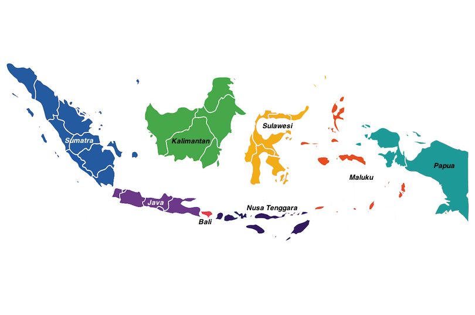
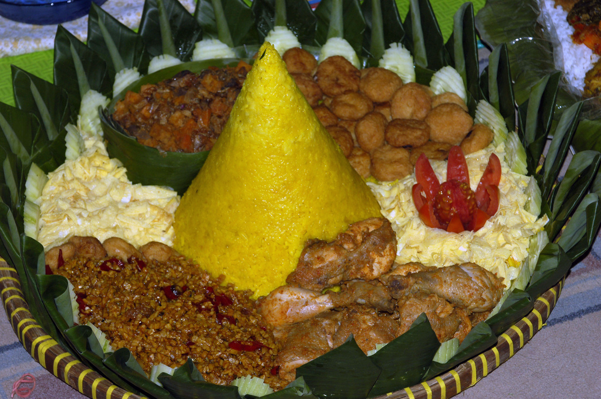
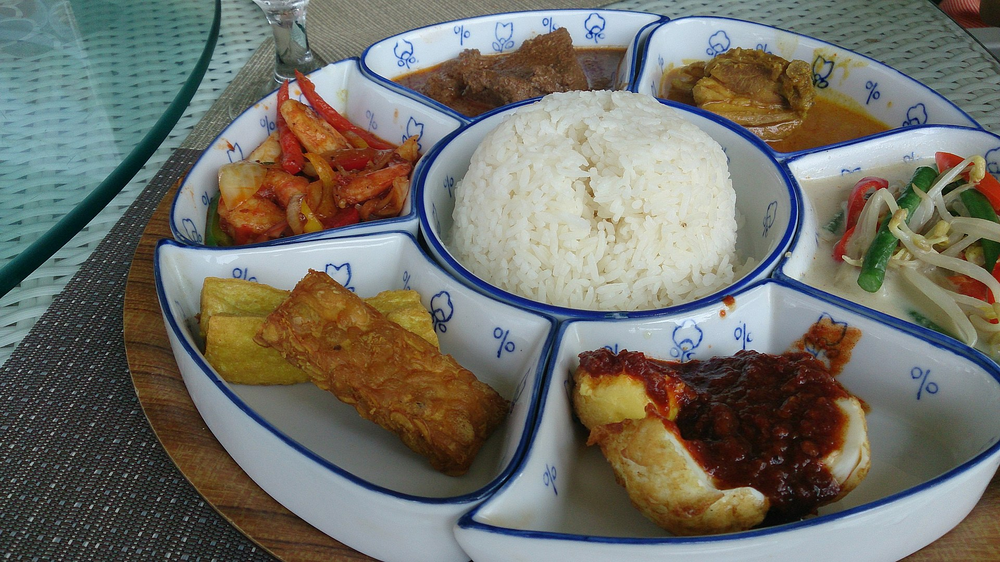
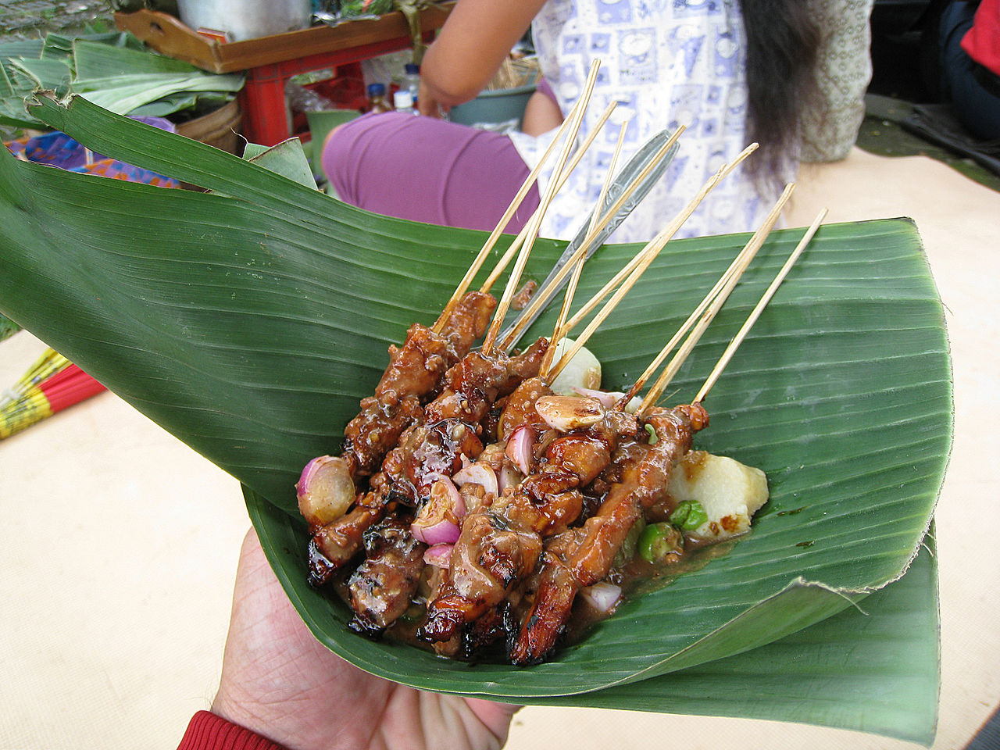
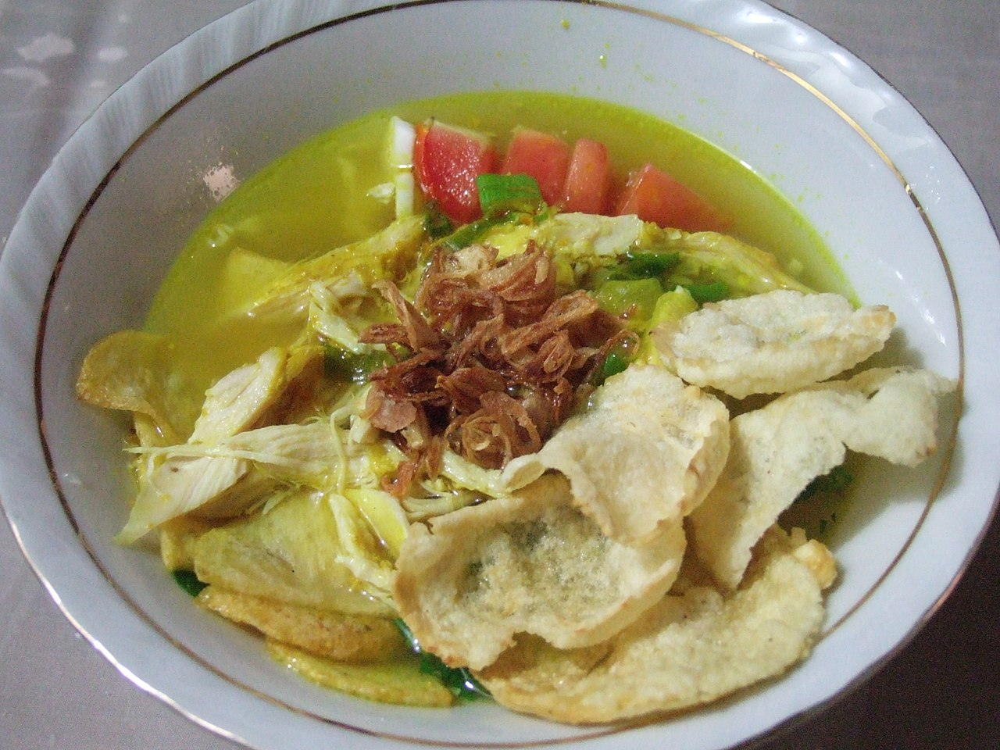

Indonesia está conformada por 17.508 islas.
Es por esto que en su pueblo hay muchos grupos étnicos, lingüísticos y religiosos.

Mapa con enlaces a wikipedia.org
¿Qué debemos conocer sobre Indonesia?
Mapa con enlaces a wikipedia.org
¿Qué debemos conocer sobre Indonesia?
La República de Indonesia, el mayor archipiélago del mundo, está formada por más de 17.500 islas, y se encuentra entre el extremo suroriental de Asia (Sumatra, Borneo, Java, Bali) y Oceanía (Célebes, Molucas, Nueva Guinea, Islas Menores de la Sonda, a partir de Lombok)
Hay una amplia variedad de recetas y cocinas en parte porque Indonesia está
compuesta por aproximadamente 6.000 islas pobladas
del total de 17.508 en el archipiélago más grande del mundo. Existen muchas cocinas regionales,
a menudo basadas en la cultura indígena con algunas influencias extranjeras. Indonesia tiene
alrededor de 5.350 recetas tradicionales,
de las cuales 30 se consideran las más importantes.
Vamos a ver algunos:
Muchas costumbres y ceremonias tradicionales de Indonesia incorporan comida y banquete, uno de los mejores ejemplos es el tumpeng. Originario de Java, el tumpeng es un montículo de arroz colorado con cúrcuma en forma de cono rodeado por una variedad de otros platos compuestos de carnes y verduras propias de la región. Se elabora para celebrar la ceremonia del slamatan.
Nasi Padang (arroz al estilo Padang) es el arroz al vapor que se sirve con varias opciones de platos precocinados originados en la ciudad de Padang, en el oeste de Sumatra. Es un banquete en miniatura de carnes, pescado, verduras y sambals picantes que se comen con arroz blanco. Es la gran contribución del Minangkabau a la cocina indonesia.
El Gado-gado se trata de un plato tradicional de la cocina indonesa, elaborado con diferentes verduras típicas de la región aliñadas como ensalada con cacahuetes y salsas diversas. El plato es muy popular y figura en todos los menús de los hoteles y restaurantes de toda Indonesia, así como en los restaurantes indonesios existentes en occidente. Hoy en día los indonesios piensan que la producción en masa de este plato con el objeto de dar salida a las grandes cadenas de cáterin ha arruinado la calidad media con la que se ofrece el plato.

Satay (escrito igualmente como saté) es un plato originario de Sumatra o Java, Indonesia, pero que es muy popular en otros países del Sureste Asiático tales como China, Malasia, Singapur, Filipinas y Tailandia, así como en Países Bajos influenciado a través de las colonias neerlandesas. En Malasia el satay es muy popular durante las celebraciones y puede encontrarse a lo largo de todo el país. Una analogía cercana la podemos encontrar en el Japón, donde el yakitori es muy semejante. Adicionalmente se tiene el shish kebab similar al satay.
Satayu de pollo.
Soto denominado también Sroto o Coto es una sopa típica de la cocina indonesa que se elabora de un caldo de base y verduras diversas. Las carnes empleadas en la elaboración del caldo provienen principalmente de la vaca o del pollo, pero existen versiones con cerdo o cordero. Se suele tomar acompañado de arroz. Los sotos se diferencian de sus ingredientes por ejemplo se tiene el Soto ayam (pollo) y el Soto Kambing (cordero).
Soto ayam.
Las tradiciones en Indonesia son muy variadas debido a las numerosas creencias
existentes en cada una de sus islas.
Tiene un rango demográfico diverso de más de 1300 grupos étnicos y con más de 700 idiomas
vivos.
Entre las creencias de Indonesia, las mayoritarias son el islam, el cristianismo, el hinduismo y
el budismo.
Además, Indonesia tiene la población musulmana más grande del mundo.
En la siguiente tabla podemos ver el porcentaje de población creyente de cada religión por zona:
| Zonas/Religiones | Islam | Cristianismo | Hinduismo | Budismo | ||
|---|---|---|---|---|---|---|
| - | Tradicional | Moderno | Protestantismo | Catolicismo | ||
| Sumatra | 6% | 90% | 0,1% | 0,1% | 0,1% | 3,7% |
| Java | 99,1% | 0% | 0,1% | 0% | 0,1% | 0,7% |
| Bali | 0% | 0,1% | 0,1% | 0% | 99,8% | 0% |
| Kalimantan | 0,1% | 94,8% | 0,1% | 0% | 5% | 0% |
| Nusa Tenggara | 0,1% | 40,7% | 33% | 26% | 0,2% | 0% |
| Sulawesi | 0,1% | 93,8% | 6% | 0,1% | 0% | 0% |
| Maluku | 0,1% | 31% | 68% | 0,1% | 0% | 0% |
| Papua | 0,4% | 0% | 99,3% | 0,1% | 0% | 0% |
Normalmente el arisan es una reunión social que involucra a la Asociación Rotatoria de Ahorro y Crédito. Se lleva a cabo en un intervalo fijo, generalmente una vez al mes, sin embargo, al ser una red social informal, esto puede variar. Se lleva a cabo en la casa de cada miembro por turno. Cada miembro debe aportar la misma cantidad de dinero y luego se saca el lote. El miembro que gane, recibe el pago del dinero recaudado y organizará el lugar y la comida, para la próxima reunión. En el curso del arisan, la cantidad pagada a otros miembros será igual a la cantidad recibida cuando se lleva a cabo el arisan. También hay un dicho, "comer o no comer mientras nos tengamos el uno al otro".
Selametan es una fiesta comunitaria de Java, que representa la unidad social de quienes participan en ella. Es practicado por grupos étnicos javaneses, sundaneses y madureses. Puede entenderse como una especie de ritual de acción de gracias, pero muchos consideran que al involucrarse, el individuo también busca bendiciones y protecciones de Dios. 'Selamet' en javanés significa 'a salvo de cualquier daño' y también puede significar 'exitoso, liberado de cualquier problema u obstáculo'. El selametan generalmente se lleva a cabo en eventos del ciclo de vida como el nacimiento, la circuncisión, el compromiso, el matrimonio y la muerte. O eventos de la vida como mudarse de residencia, partir para un viaje largo (como una peregrinación del hajj o trabajar en el extranjero), abrir un nuevo negocio (como abrir un warung), promoción profesional. Los javaneses creen que el selametan podría realizarse como tolak bala, un ritual para disuadir elementos negativos o eventos desafortunados que podrían tener lugar en el futuro. Selametan también se puede llevar a cabo de acuerdo con eventos religiosos, como Mawlid o Satu Suro. Durante el selametan, generalmente se sirven porciones de arroz en forma de cono llamadas tumpeng.
En Indonesia hay muchos tipos de ceremonias y rituales festivos vinculados a las actividades agrícolas, desde plantar las semillas hasta cosechar. Uno de ellos es Seren Taun, un festival y ceremonia tradicional de la cosecha de arroz sundanés. Estos festivales se celebraron originalmente para marcar el nuevo año agrícola en el antiguo calendario de Sundanese, así como para dar gracias por las bendiciones de la cosecha de arroz en abundancia, y también para orar por la próxima cosecha exitosa. Otras etnias, como los javaneses, podían celebrar ceremonias de selametan desde el inicio del calendario agrícola hasta la cosecha. Mientras que el pueblo Dayak realiza el Hudoq, un baile durante el festival de agradecimiento por la cosecha. Hudoq es una deidad que simboliza la plaga, y se cree que al apaciguar a Hudoq disuadirá la plaga en el próximo ciclo agrícola.
Tari Hudoq.
La historia de Indonesia ha sido moldeada por su posición geográfica, sus recursos naturales, una serie de migraciones y contactos humanos, guerras y conquistas, así como por el comercio, la economía y la política. Indonesia es un país archipelágico de 17.000 a 18.000 islas (8.844 nombradas y 922 habitadas permanentemente) que se extienden a lo largo del ecuador en el sudeste asiático. La posición estratégica de la ruta marítima del país fomentó el comercio entre islas e internacional; Desde entonces, el comercio ha moldeado fundamentalmente la historia de Indonesia. El área de Indonesia está poblada por pueblos de diversas migraciones, lo que crea una diversidad de culturas, etnias e idiomas. Los accidentes geográficos y el clima del archipiélago influyeron significativamente en la agricultura y el comercio, y en la formación de estados. Los límites del estado de Indonesia coinciden con las fronteras del siglo XX de las Indias Orientales Holandesas.
Los restos fosilizados de Homo erectus y sus herramientas, popularmente conocido como el "Hombre de Java", sugieren que el archipiélago indonesio estuvo habitado por lo menos hace 1,5 millones de años. Se cree que los austronesios, que forman la mayoría de la población moderna, eran originarios de Taiwán y llegaron a Indonesia alrededor del año 2000 a. C. Desde el siglo VII d.C., el poderoso reino naval de Srivijaya floreció trayendo consigo influencias hindúes y budistas. La dinastía budista agrícola Sailendra y la hindú Mataram, prosperaron y declinaron en el interior de Java. El último reino no musulmán importante, el reino hindú Majapahit, floreció a finales del siglo XIII, y su influencia se extendió por gran parte de Indonesia. La evidencia más temprana de poblaciones islamizadas en Indonesia data del siglo XIII en el norte de Sumatra; otras áreas de Indonesia adoptaron gradualmente el Islam, que se convirtió en la religión dominante en Java y Sumatra a fines del siglo XVI. En su mayor parte, el Islam se superpuso y se mezcló con las influencias culturales y religiosas existentes.
Europeos como los portugueses llegaron a Indonesia desde el siglo XVI buscando monopolizar las fuentes de valiosa nuez moscada, clavo de olor y pimienta cúbica en Maluku. En 1602, los holandeses establecieron la Compañía Holandesa de las Indias Orientales (VOC) y se convirtieron en la potencia europea dominante en 1610. Tras la quiebra, la VOC se disolvió formalmente en 1800 y el gobierno de los Países Bajos estableció las Indias Orientales Holandesas bajo control gubernamental. A principios del siglo XX, el dominio holandés se extendió hasta los límites actuales. La invasión japonesa y la ocupación posterioren 1942-1945 durante la Segunda Guerra Mundial terminó el dominio holandés y alentó el movimiento de independencia indonesio previamente suprimido. Dos días después de la rendición de Japón en agosto de 1945, el líder nacionalista Sukarno declaró la independencia y se convirtió en presidente. Holanda intentó restablecer su dominio, pero una amarga lucha diplomática y armada terminó en diciembre de 1949, cuando ante la presión internacional, los holandeses reconocieron formalmente la independencia de Indonesia.
Ceremonia de firma donde se reconoció la soberanía de Indonesia en La Haya, 27 Diciembre 1949.
Un intento de golpe de Estado en 1965 condujo a una violenta purga anticomunista dirigida por el ejército en la que murieron más de medio millón de personas. El general Suharto superó políticamente al presidente Sukarno y se convirtió en presidente en marzo de 1968. Su administración del Nuevo Orden se ganó el favor de Occidente, cuya inversión en Indonesia fue un factor importante en las siguientes tres décadas de sustancial crecimiento económico. Sin embargo, a finales de la década de 1990, Indonesia fue el país más afectado por la crisis financiera de Asia oriental, que provocó protestas populares y la dimisión de Suharto el 21 de mayo de 1998. La ReformasiLa era posterior a la renuncia de Suharto, ha llevado a un fortalecimiento de los procesos democráticos, incluido un programa de autonomía regional, la secesión de Timor Oriental y la primera elección presidencial directa en 2004. La inestabilidad política y económica, el malestar social, la corrupción, los desastres naturales y el terrorismo han frenado el progreso. Aunque las relaciones entre los diferentes grupos religiosos y étnicos son en gran medida armoniosas, el descontento sectario agudo y la violencia siguen siendo problemas en algunas áreas.